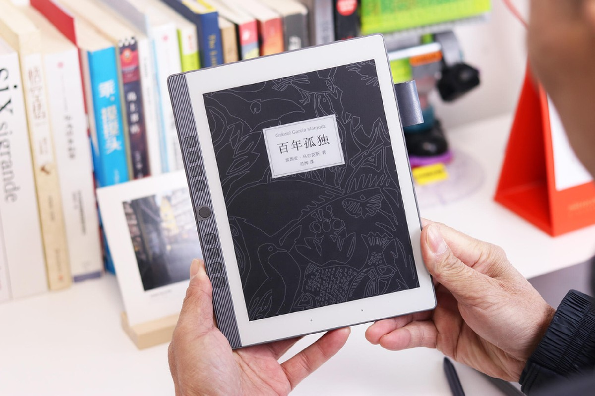
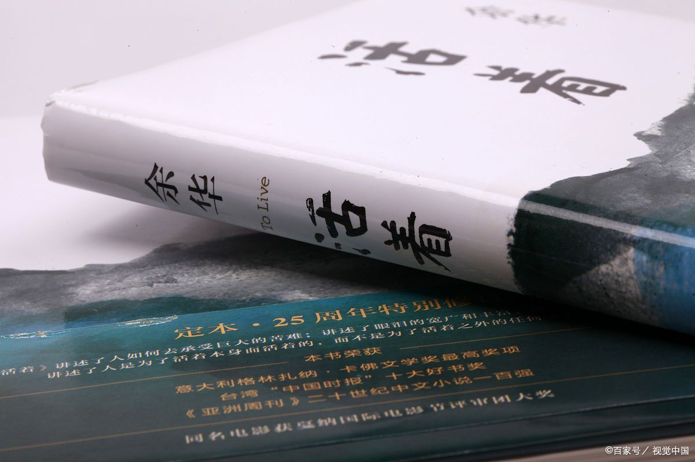
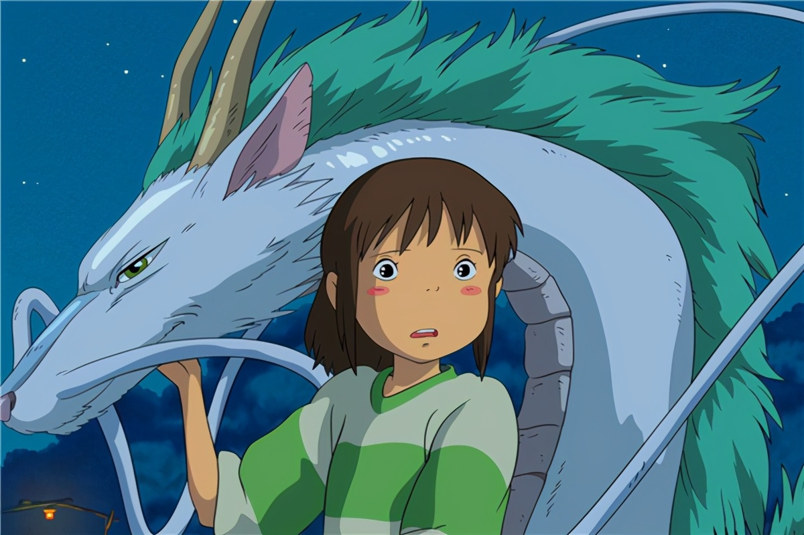

篮球
篮球，是我最喜欢的一项运动，在我眼里，它不仅是一项运动， 更是一种激情的释放和团队精神的体现，篮球教会了我坚持 与拼搏，无论胜败，它都是我青春记忆中最宝贵的篇章。
斯蒂芬库里
我的偶像是斯蒂芬·库里，他是一位美国职业篮球运动员，以卓 越的三分球投射能力和创新的比赛风格而闻名，他已经多次带 领球队赢得NBA总冠军，还两次获得常规赛MVP称号。
《百年孤独》
《百年孤独》是我很喜欢的一本书，它通过布恩迪亚家族七代人的 传奇故事，展现了拉丁美洲的社会变迁，书中独特的想象力和深刻 的人性探讨让人深思，也能感受到时间的无情和生命的孤独。
《活着》
《活着》是一部揭示人生苦难与坚韧精神的作品，通过主人公福贵的 一生，展现了生命的脆弱与珍贵，以及在逆境中坚韧不拔的生命力。 这部小说让我反思生活的意义，懂得珍惜当下，勇敢面对困难。
《云边有个小卖部》
《云边有个小卖部》是一部关于生活、爱情和成长的小说，它讲述了 主人公刘十三在云边小镇的生活经历,通过对人物性格的深入刻画和 对生活细节的生动描绘，引发了读者对生活意义的思考。
《大话西游》

《大话西游》是一部充满哲理的电影，它讲述了孙悟空在经历一系列冒险 和挑战后，逐渐认识到真爱和责任的故事。它教会了我珍惜当下，勇敢追 求真爱，同时让我明白了每个人都有自己的责任。
《你的婚礼》
《你的婚礼》是一部触动人心的爱情电影，通过主人公的故事展现了爱情的 复杂性和不确定性，成长和选择的重要性。影片让人深刻反思爱情的 真谛，提醒我们珍惜眼前人，勇敢面对生活的挑战。
《千与千寻》
《千与千寻》是一部富有深意的动画电影，通过千寻的冒险旅程，展现了勇气、 成长和爱的力量。电影激励我们面对困难时保持坚韧不拔，追求自我成 长，同时也提醒我们珍惜身边的亲情和友情。